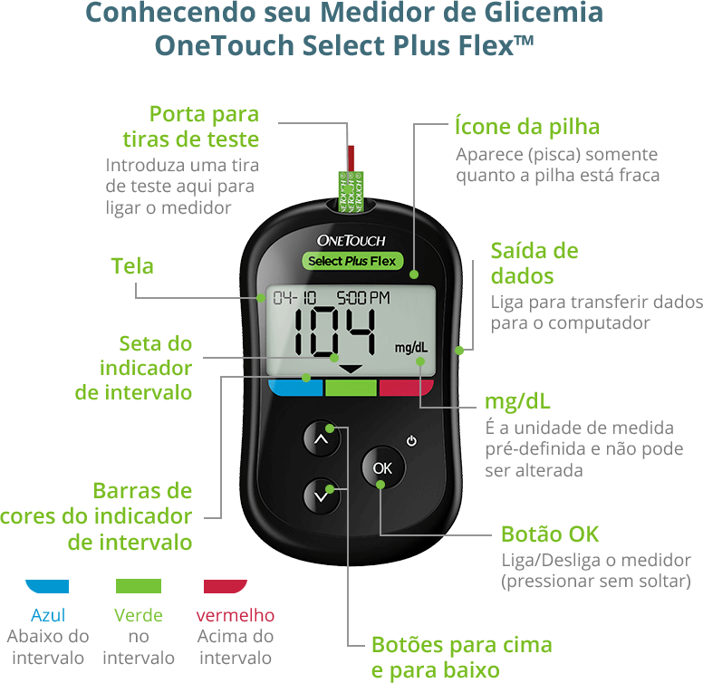
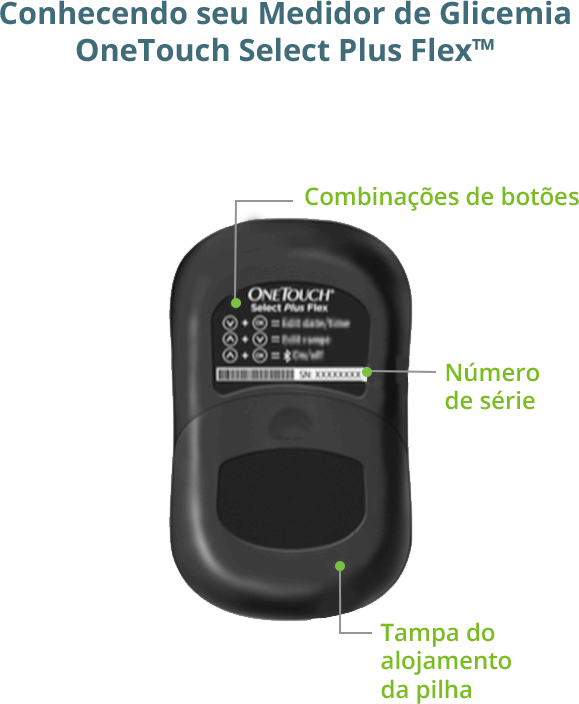
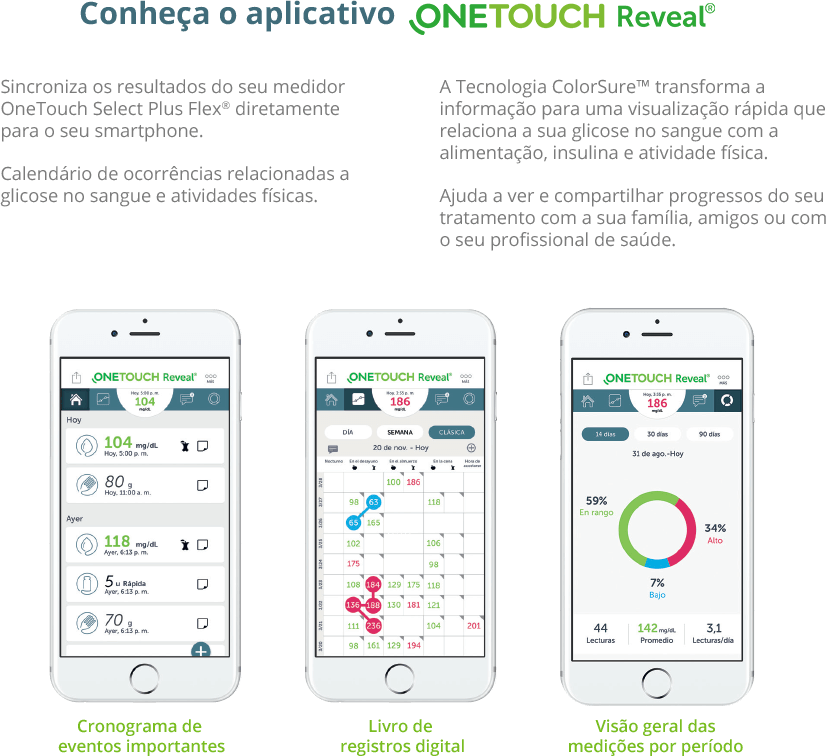
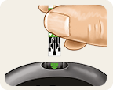
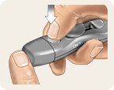
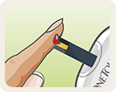
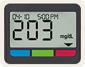
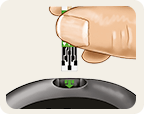
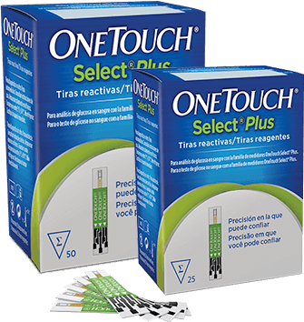
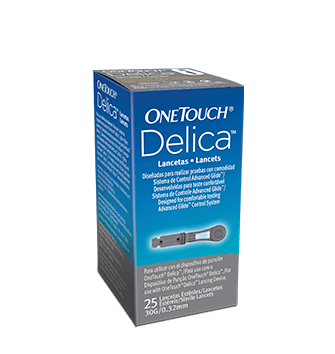

Select Plus Flex® Medidor de Glicemia
O Medidor de Glicemia OneTouch Select Plus Flex® indica o nível glicêmico através das cores, de acordo com o intervalo pré definido. Apresenta o resultado em apenas 5 segundos. Possui um visor grande e fácil de ler, e tem memória para 500 medições. Conecta-se via Bluetooth com o aplicativo de controle de diabetes OneTouch Reveal®.
-
Possui Tecnologia Colorsure™, que mostra instantaneamente através das cores, se o nível de glicose no sangue está dentro ou fora do intervalo recomendado para você
-
Não necessita de codificação
-
Design compacto e moderno
-

O medidor OneTouch Select Plus Flex® possui uma faixa de medição de 20 a 600 mg/dL
-
Resultados precisos em apenas 5 segundos
-
Amostra: mínimo de 1uL
-
Acuracidade: ISO 15197.2013
-
Conectividade via Bluetooth
e 1 Bateria de Lítio CR2032 3.0v
-

-

-

- Download do manual
-
-
Como usar o medidor OneTouch Select Plus Flex®
-

Passo 1 Insira a tira reagente: Com o medidor desligado, insira a tira reagente na porta de teste com as barras de contato voltadas para você.
-

Passo 2 Puncione a amostra de sangue: Higienize as mãos e use o novo Lancetador OneTouch™ Delica® para obter a amostra necessária (apenas uma gota é suficiente).
-

Passo 3 Aplique: Ao aparecer uma gota de sangue piscando no visor, mova o medidor com a tira reagente para a gota de sangue, tocando-a até que a janela de confirmação seja preenchida completamente. Em 5 segundos, o medidor apresentará o nível de glicose.
-

Passo 4 Leitura: Sua leitura aparecerá no visor. A seta do indicador apontará para a barra de cores no indicador de intervalo para informar a leitura.
-

-  Tiras Reagentes OneTouch Select® Plus
-  Lancetas OneTouch™ Delica®
-
1
Fazer o cadastro e registrar seu ONETOUCH®
-
2
Registrar caixas de tiras ONETOUCH®
-
3
Acumular pontos para trocar por produtos em uma das redes credenciadas ao Programa Epharma
©Johnson & Johnson do Brasil Indústria e Comércio de Produtos para Saúde Ltda., 2018. EOS 100216-181015.
Elaborado em Outubro/2018. Johnson & Johnson Medical Brasil, uma divisão de Johnson & Johnson do Brasil Indústria e Comércio de Produtos para Saúde Ltda. Av. Presidente Juscelino Kubitschek, 2041 Complexo JK - Bloco B, São Paulo/SP, CEP 04543-011 Responsável técnico: Nancy Mesas do Rio – CRF-SP nº 10.965. OneTouch™ Delica® Lancetas Registro Anvisa No.: 80145909071. sistema OneTouch Select Plus Flex®: MS: 80145909082. Tira Reagente OneTouch Select® Plus MS: 80145901759. ONETOUCH DELICA DISPOSITIVO DE PUNÇÃO Reg. Anvisa: 80145909073.